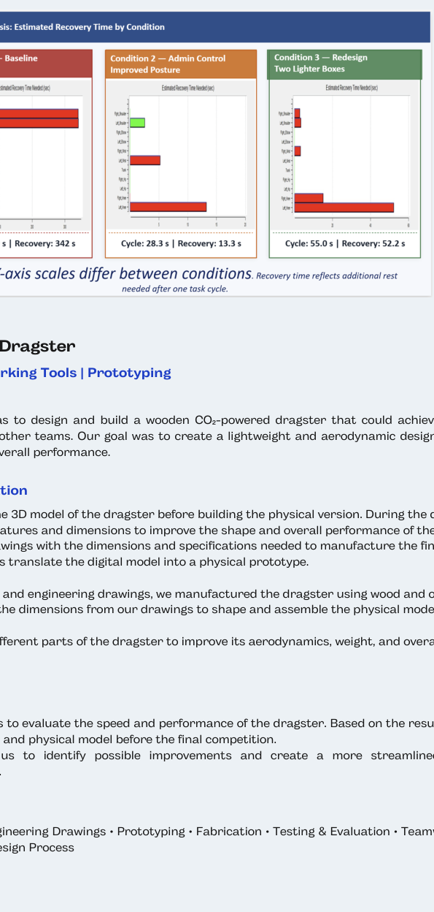

ENGINEERING PROJECT
Ergonomics Risk Assessment of Warehouse Stocking Operations
Tools: Siemens Jack | Microsoft Excel
Objective
Evaluated warehouse stocking and manual material handling operations to identify ergonomic risks and develop workstation improvements that could reduce worker fatigue and injury risk while maintaining productivity.
Process
- Developed a digital human model in Siemens Jack to simulate warehouse stocking and lifting activities.
- Analyzed worker posture, lifting conditions, physical demands, and repetitive movements.
- Performed Low Back Analysis (LBA), Static Strength Prediction (SSP), Metabolic Energy Expenditure (MEE), Fatigue Analysis, and NIOSH Lifting Assessment.
- Created and tested redesign alternatives by modifying lifting posture and load distribution.
Solutions / Recommendations
Proposed engineering and administrative controls to reduce ergonomic risks. Compared alternatives based on cycle time, metabolic cost, and low-back loading to determine an improved workstation design.
Skills Demonstrated
Ergonomic Analysis · Human Factors · Problem Solving · Process Improvement · Data Analysis · Engineering Decision-Making
